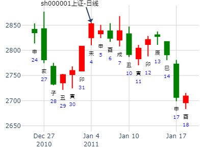
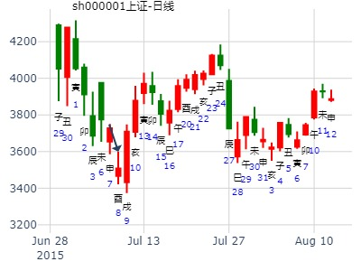
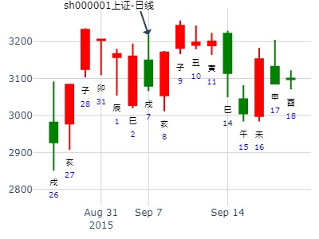

主帖标题: 2011年 01月04日-7日 上证模拟详细予想
时间: 2011-01-03
干支: 庚寅年戊子月戊午日 (旬空: 子丑 )
同人静卦
(归魂)
朱雀 ▅▅▅▅▅ 子孙戌土 应
青龙 ▅▅▅▅▅ 妻财申金
玄武 ▅▅▅▅▅ 兄弟午火
白虎 ▅▅▅▅▅ 官鬼亥水 世
腾蛇 ▅▅ ▅▅ 子孙丑土
勾陈 ▅▅▅▅▅ 父母卯木

占事：我做教育业还是贸易有财运？-王
时间: 2016-01-01 15：51
干支: 乙未年戊子月壬午日戊申时 (旬空: 申酉 )
同人静卦
(归魂)
白虎 ▅▅▅▅▅ 子孙戌土 应
腾蛇 ▅▅▅▅▅ 妻财申金
勾陈 ▅▅▅▅▅ 兄弟午火
朱雀 ▅▅▅▅▅ 官鬼亥水 世
青龙 ▅▅ ▅▅ 子孙丑土
玄武 ▅▅▅▅▅ 父母卯木
同人于野，亨。 利涉大川，利君子贞。
占事：2016年投资股市财运怎样
公历起卦时间：2016年1月11日20时28分 (电脑自动)
干支：乙未年 己丑月 壬辰日 庚戌时 （日空：午未）
神煞：驿马－寅 桃花－酉 日禄－亥 贵人－卯，巳
离宫：天火同人 (归魂) 离宫：天火同人 (归魂)
六神 伏神 本 卦 变 卦
白虎 子孙壬戌土 ▅▅▅▅▅ 应 子孙壬戌土 ▅▅▅▅▅ 应
腾蛇 妻财壬申金 ▅▅▅▅▅ 妻财壬申金 ▅▅▅▅▅
勾陈 兄弟壬午火 ▅▅▅▅▅ 兄弟壬午火 ▅▅▅▅▅
朱雀 官鬼己亥水 ▅▅▅▅▅ 世 官鬼己亥水 ▅▅▅▅▅ 世
青龙 子孙己丑土 ▅▅ ▅▅ 子孙己丑土 ▅▅ ▅▅
玄武 父母己卯木 ▅▅▅▅▅ 父母己卯木 ▅▅▅▅▅
主帖标题: 股市诸葛神数测试
600005输入的三个汉字为：通 货 程
卦语：禄马交驰 男儿得志时 行程早办 荣归乐颐期
公历时间：2007年3月27日15时55分 星期二
干支：丁亥年 癸卯月 庚申日 甲申时 (旬空：子丑)
神煞：驿马—寅 桃花—酉 日禄—申 贵人—寅，午
离宫：天火同人（归魂）
六神 【本 卦】
螣蛇 ▅▅▅▅▅ 子孙壬戌土 应
勾陈 ▅▅▅▅▅ 妻财壬申金
朱雀 ▅▅▅▅▅ 兄弟壬午火
青龙 ▅▅▅▅▅ 官鬼己亥水 世
玄武 ▅▅ ▅▅ 子孙己丑土
白虎 ▅▅▅▅▅ 父母己卯木
财星当日建旺相，是好货。卯月里金不算旺，子孙衰弱不动，辰月会大旺。看时机可以入部分股票
[此贴子已经被作者于2007-3-27 15:57:32编辑过]
我也起一卦, 看信息是否同步?
出生年：年 性别：男 占事: 4月1日上海大盘走势
起卦方式：手动摇卦 周易天地www.64gua.com六爻线上排盘系统
公历时间：2010年3月31日23时23分
干支：庚寅年 己卯月 辛巳日(用夜子则为庚辰日) 戊子时
旬空：午未 申酉 申酉 午未
神煞：驿马─亥 桃花─午 日禄─酉 贵人─寅，午
离宫：天火同人（归魂）
六神 【本 卦】
螣蛇 ▄▄▄▄▄ 子孙壬戌土 应
勾陈 ▄▄▄▄▄ 妻财壬申金
朱雀 ▄▄▄▄▄ 兄弟壬午火
青龙 ▄▄▄▄▄ 官鬼己亥水 世
玄武 ▄▄ ▄▄ 子孙己丑土
白虎 ▄▄▄▄▄ 父母己卯木
同样世入墓, 财空. 跌象.
华宇软件（300271）近期趋势： 天火同人静卦。
公历起卦时间：2016年3月25日11时5分 (在线摇卦)
干支：丙申年 辛卯月 丙午日 甲午时 （日空：寅卯）
离宫：天火同人 (归魂) 离宫：天火同人 (归魂)
六神 伏神 本 卦 变 卦
青龙 子孙壬戌土 ▅▅▅▅▅ 应 子孙壬戌土 ▅▅▅▅▅ 应
玄武 妻财壬申金 ▅▅▅▅▅ 妻财壬申金 ▅▅▅▅▅
白虎 兄弟壬午火 ▅▅▅▅▅ 兄弟壬午火 ▅▅▅▅▅
腾蛇 官鬼己亥水 ▅▅▅▅▅ 世 官鬼己亥水 ▅▅▅▅▅ 世
勾陈 子孙己丑土 ▅▅ ▅▅ 子孙己丑土 ▅▅ ▅▅
朱雀 父母己卯木 ▅▅▅▅▅ 父母己卯木 ▅▅▅▅▅
辰月应爻子孙月破。
主帖标题: 捍卫老祖宗感通卦的尊严：测2020.3.4上证走势？N05
捍卫老祖宗感通卦的尊严：测2020.3.4上证收盘走势？N05
公历起卦时间：2020年3月4日7时37分 (电脑自动)
干支：庚子年 戊寅月 丙午日 壬辰时 （日空：寅卯）
离宫：天火同人 (归魂)
六神 伏神 本 卦
青龙 子孙壬戌土 ▅▅▅▅▅ 应
玄武 妻财壬申金 ▅▅▅▅▅
白虎 兄弟壬午火 ▅▅▅▅▅
螣蛇 官鬼己亥水 ▅▅▅▅▅ 世
勾陈 子孙己丑土 ▅▅ ▅▅
朱雀 父母己卯木 ▅▅▅▅▅
试测上证2021.3.1戊申一-3.15壬戌一哪日顶？
公历起卦时间：2021年3月6日13时52分 (电脑自动)
干支：辛丑年 辛卯月 癸丑日 己未时 （日空：寅卯）
离宫：天火同人 (归魂) 离宫：天火同人 (归魂)
六神 伏神 本 卦 变 卦
白虎 子孙壬戌土 ▅▅▅▅▅ 应 子孙壬戌土 ▅▅▅▅▅ 应
螣蛇 妻财壬申金 ▅▅▅▅▅ 妻财壬申金 ▅▅▅▅▅
勾陈 兄弟壬午火 ▅▅▅▅▅ 兄弟壬午火 ▅▅▅▅▅
朱雀 官鬼己亥水 ▅▅▅▅▅ 世 官鬼己亥水 ▅▅▅▅▅ 世
青龙 子孙己丑土 ▅▅ ▅▅ 子孙己丑土 ▅▅ ▅▅
玄武 父母己卯木 ▅▅▅▅▅ 父母己卯木 ▅▅▅▅▅

占事：000962东方钽业在4月份的走势
起卦方式：手工指定 -出生年：75年 性别：女
公历时间：2007年4月16日14时30分 星期一
干支：丁亥年 甲辰月 庚辰日 癸未时 (旬空：申酉)
神煞：驿马—寅 桃花—酉 日禄—申 贵人—寅，午
离宫：天火同人（归魂）
六神 【本 卦】
螣蛇 ▅▅▅▅▅ 子孙壬戌土 应
勾陈 ▅▅▅▅▅ 妻财壬申金
朱雀 ▅▅▅▅▅ 兄弟壬午火
青龙 ▅▅▅▅▅ 官鬼己亥水 世
玄武 ▅▅ ▅▅ 子孙己丑土
白虎 ▅▅▅▅▅ 父母己卯木

起卦方式：铜钱摇卦
占问事宜：五月八号寅日五月九号卯日大盘走势如何？-湖水清清
起卦公历：2007年5月3日19时41分(北京时间)。
起卦农历：二○○七年 三月 十七日 戌时。
干支： 丁亥年 甲辰月 丁酉日 庚戌时
主变卦 天火同人(离宫-归魂) 之 天火同人(离宫) [空亡:辰、巳]
青龙 ━━━ 子孙戌土 应 ━━━ 子孙戌土 应
玄武 ━━━ 妻财申金 ━━━ 妻财申金
白虎 ━━━ 兄弟午火 ━━━ 兄弟午火
腾蛇 ━━━ 官鬼亥水 世 ━━━ 官鬼亥水 世
勾陈 ━ ━ 子孙丑土 ━ ━ 子孙丑土
朱雀 ━━━ 父母卯木 ━━━ 父母卯木
占事：002009当天走势 起卦方式：手工指定 易经股市论坛在线排盘系统
公历时间：2013年5月15日8时44分
干 支：癸巳年 丁巳月 辛巳日 壬辰时 旬 空：午未 子丑 (申酉) 午未
离宫：天火同人（归魂）
六神 【本 卦】
螣蛇 ▄▄▄▄▄ 子孙壬戌土 应
勾陈 ▄▄▄▄▄ 妻财壬申金
朱雀 ▄▄▄▄▄ 兄弟壬午火
青龙 ▄▄▄▄▄ 官鬼己亥水 世
玄武 ▄▄ ▄▄ 子孙己丑土
白虎 ▄▄▄▄▄ 父母己卯木
己午时兄弟当时令，还没涨。到了未时冲丑土暗动开涨。
占事：南都电源5月会不会涨？
时间: 2014-05-03 14时14分
干支: 甲午年戊辰月甲戌日辛未时 (旬空: 申酉 )
同人静卦
(归魂)
玄武 ▅▅▅▅▅ 子孙戌土 应
白虎 ▅▅▅▅▅ 妻财申金
腾蛇 ▅▅▅▅▅ 兄弟午火
勾陈 ▅▅▅▅▅ 官鬼亥水 世
朱雀 ▅▅ ▅▅ 子孙丑土
青龙 ▅▅▅▅▅ 父母卯木
初断：
1.五爻妻财申金旺旬空，在下周子丑寅周三的这天有冲实，涨一天。（实际寅日反而跌）
2.下下周的申日出空涨一天。（实际申酉出空就开跌）
马后炮：
5月整体先探底再回升？应在出空的第一个申酉日？
莫非世爻在巳月月破，而申金旬空且被巳月合住之原因？
占事：华天科技6.11-6.15 趋势 -姓名：鑫鑫向荣 男
起卦方式：手动摇卦 易经股市论坛 在线排盘系统
公历时间：2012年6月10日8时30分
干 支：壬辰年 丙午月 壬寅日 甲辰时
旬 空：午未 寅卯 (辰巳) 寅卯
离宫：天火同人（归魂）
六神 【本 卦】
白虎 ▄▄▄▄▄ 子孙壬戌土 应
螣蛇 ▄▄▄▄▄ 妻财壬申金
勾陈 ▄▄▄▄▄ 兄弟壬午火
朱雀 ▄▄▄▄▄ 官鬼己亥水 世
青龙 ▄▄ ▄▄ 子孙己丑土
玄武 ▄▄▄▄▄ 父母己卯木
马后炮：
1.财旺月克日冲，不算旺。
2.子孙得月生还可以。
3.寅冲申金为破，则破而逢合为应期（类似动而逢合）大涨。
4.未日冲丑土暗动，生金（不是墓金），大涨。
5.同人卦，一般主涨。

主帖标题: 三安光电600703此股一个月内走势如何？
出生：1982 年 性别：男 占事：600703一个月内走势？
公历起卦时间：2015年6月17日15时59分 (在线摇卦)
干支：乙未年 壬午月 甲子日 壬申时 （日空：戌亥）
神煞：驿马－寅 桃花－酉 日禄－寅 贵人－丑，未
离宫：天火同人 (归魂)
六神 伏神 本 卦
玄武 子孙壬戌土 ▅▅▅▅▅ 应
白虎 妻财壬申金 ▅▅▅▅▅
腾蛇 兄弟壬午火 ▅▅▅▅▅
勾陈 官鬼己亥水 ▅▅▅▅▅ 世
朱雀 子孙己丑土 ▅▅ ▅▅
青龙 父母己卯木 ▅▅▅▅▅
王注：兄弟午火暗动
三安光电一个月内走势如何？
葵花药业，近期三个月股价走势？
公历起卦时间：2015年6月18日7时48分 (手工指定)
干支：乙未年 壬午月 乙丑日 庚辰时 （日空：戌亥）
离宫：天火同人 (归魂) 离宫：天火同人 (归魂)
六神 伏神 本 卦 变 卦
玄武 子孙壬戌土 ▅▅▅▅▅ 应 子孙壬戌土 ▅▅▅▅▅ 应
白虎 妻财壬申金 ▅▅▅▅▅ 妻财壬申金 ▅▅▅▅▅
腾蛇 兄弟壬午火 ▅▅▅▅▅ 兄弟壬午火 ▅▅▅▅▅
勾陈 官鬼己亥水 ▅▅▅▅▅ 世 官鬼己亥水 ▅▅▅▅▅ 世
朱雀 子孙己丑土 ▅▅ ▅▅ 子孙己丑土 ▅▅ ▅▅
青龙 父母己卯木 ▅▅▅▅▅ 父母己卯木 ▅▅▅▅▅
月破入墓。兄弟午火得月旺而跌。
主帖标题: 试测2022.6.20星期一中国A股收盘涨幅最大的行业版块？
出生：2022 年 性别：男 占事：没填
公历起卦时间：2022年6月20日8时8分 (电脑自动)
干支：壬寅年 丙午月 甲辰日 戊辰时 （日空：寅卯）
离宫：天火同人 (归魂) 离宫：天火同人 (归魂)
六神 伏神 本 卦 变 卦
玄武 子孙壬戌土 ▅▅▅▅▅ 应 子孙壬戌土 ▅▅▅▅▅ 应
白虎 妻财壬申金 ▅▅▅▅▅ 妻财壬申金 ▅▅▅▅▅
螣蛇 兄弟壬午火 ▅▅▅▅▅ 兄弟壬午火 ▅▅▅▅▅
勾陈 官鬼己亥水 ▅▅▅▅▅ 世 官鬼己亥水 ▅▅▅▅▅ 世
朱雀 子孙己丑土 ▅▅ ▅▅ 子孙己丑土 ▅▅ ▅▅
青龙 父母己卯木 ▅▅▅▅▅ 父母己卯木 ▅▅▅▅▅
金輿辰冲
主帖标题: [讨论]王吉柱的股票起卦法
出生年：年 性别：男 占事:30分钟K线成卦测7月10日走势（测试贴）
起卦方式：手工指定 周易天地www.64gua.com六爻线上排盘系统
公历时间：2007年7月9日15时51分
农历时间：丁亥年 五月二十五日申时
干支：丁亥年 丁未月 甲辰日 壬申时 旬空：午未 寅卯 寅卯 戌亥
神煞：驿马─寅 桃花─酉 日禄─寅 贵人─丑，未
离宫：天火同人（归魂）六神 【本 卦】
玄武 ▄▄▄▄▄ 子孙壬戌土 应
白虎 ▄▄▄▄▄ 妻财壬申金
螣蛇 ▄▄▄▄▄ 兄弟壬午火
勾陈 ▄▄▄▄▄ 官鬼己亥水 世
朱雀 ▄▄ ▄▄ 子孙己丑土
青龙 ▄▄▄▄▄ 父母己卯木
戍子暗动生财，涨。但土过旺则盈不可久也，下午戍未相刑，量能有缩减。
安圆圆提供 占事：腾邦国际八到12月的走势如何 作者：muhe945
公历起卦时间：2014年7月31日21时53分 (手工指定)
干支：甲午年 辛未月 癸卯日 癸亥时 （日空：辰巳）
离宫：天火同人 (归魂) 离宫：天火同人 (归魂)
六神 伏神 本 卦 变 卦
白虎 子孙壬戌土 ▅▅▅▅▅ 应 子孙壬戌土 ▅▅▅▅▅ 应
腾蛇 妻财壬申金 ▅▅▅▅▅ 妻财壬申金 ▅▅▅▅▅
勾陈 兄弟壬午火 ▅▅▅▅▅ 兄弟壬午火 ▅▅▅▅▅
朱雀 官鬼己亥水 ▅▅▅▅▅ 世 官鬼己亥水 ▅▅▅▅▅ 世
青龙 子孙己丑土 ▅▅ ▅▅ 子孙己丑土 ▅▅ ▅▅
玄武 父母己卯木 ▅▅▅▅▅ 父母己卯木 ▅▅▅▅▅
风生水起 占事：中国石油未来二周
公历时间：2015年7月8日7时34分
干 支：乙未年 癸未月 乙酉日 庚辰时
旬 空：辰巳 申酉 午未 申酉
离宫：天火同人（归魂）
六神 【本 卦】
玄武 ▄▄▄▄▄ 子孙壬戌土 应
白虎 ▄▄▄▄▄ 妻财壬申金
螣蛇 ▄▄▄▄▄ 兄弟壬午火
勾陈 ▄▄▄▄▄ 官鬼己亥水 世
朱雀 ▄▄ ▄▄ 子孙己丑土
青龙 ▄▄▄▄▄ 父母己卯木
风生水起 占事：大盘未月
起卦方式：手动摇卦
公历时间：2015年7月8日8时2分
干 支：乙未年 癸未月 乙酉日 庚辰时
旬 空：辰巳 申酉 午未 申酉
离宫：天火同人（归魂）
六神 【本 卦】
玄武 ▄▄▄▄▄ 子孙壬戌土 应
白虎 ▄▄▄▄▄ 妻财壬申金
螣蛇 ▄▄▄▄▄ 兄弟壬午火
勾陈 ▄▄▄▄▄ 官鬼己亥水 世
朱雀 ▄▄ ▄▄ 子孙己丑土
青龙 ▄▄▄▄▄ 父母己卯木

测沪深股市今日走势：4026.05?（7月23日）??丹霞天然
测沪深股市今日走势：4026.05?
起卦方式：手动摇卦?易经股市论坛?www.yijingstock.com?在线排盘系统?
公历时间：2015年7月23日7时24分?
干 支：乙未年?癸未月?庚子日?庚辰时
旬 空：辰巳?申酉?(辰巳)?申酉?
离宫：天火同人（归魂）
六神?【本 卦】
?螣蛇 ▄▄▄▄▄ 子孙壬戌土 应
?勾陈 ▄▄▄▄▄ 妻财壬申金
?朱雀 ▄▄▄▄▄ 兄弟壬午火
?青龙 ▄▄▄▄▄ 官鬼己亥水 世
?玄武 ▄▄?▄▄ 子孙己丑土
?白虎 ▄▄▄▄▄ 父母己卯木
主帖标题: 有没有人能预测下深港通的开通时间
出生：1979 年 性别：男 占事：测深港通何时推出？
公历起卦时间：2016年7月3日9时16分 (手工指定)
干支：丙申年 甲午月 丙戌日 癸巳时 （日空：午未）
神煞：驿马－申 桃花－卯 日禄－巳 贵人－酉，亥
离宫：天火同人 (归魂) 离宫：天火同人 (归魂)
六神 伏神 本 卦 变 卦
青龙 子孙壬戌土 ▅▅▅▅▅ 应 子孙壬戌土 ▅▅▅▅▅ 应
玄武 妻财壬申金 ▅▅▅▅▅ 妻财壬申金 ▅▅▅▅▅
白虎 兄弟壬午火 ▅▅▅▅▅ 兄弟壬午火 ▅▅▅▅▅
腾蛇 官鬼己亥水 ▅▅▅▅▅ 世 官鬼己亥水 ▅▅▅▅▅ 世
勾陈 子孙己丑土 ▅▅ ▅▅ 子孙己丑土 ▅▅ ▅▅
朱雀 父母己卯木 ▅▅▅▅▅ 父母己卯木 ▅▅▅▅▅
主帖标题: 6****8这只常年破净股，换手奇低的股，今明两年能否走出一波
公历：2020年7月3日21时4分，星期五。
干支：庚子年 壬午月 丁未日 辛亥时 (卦身：申)
主变卦 天火同人(离宫-归魂) [空亡:寅、卯]
青龙 ▅▅▅▅▅ 子孙壬戌土 应
玄武 ▅▅▅▅▅ 妻财壬申金
白虎 ▅▅▅▅▅ 兄弟壬午火
螣蛇 ▅▅▅▅▅ 官鬼己亥水 世
勾陈 ▅▅ ▅▅ 子孙己丑土
朱雀 ▅▅▅▅▅ 父母己卯木
占事：2022年下半年行情,以妻财代表指数
时间: 2022-07-19 17时36分
干支: 壬寅年丁未月癸酉日辛酉时 (旬空: 戌亥 )
同人静卦(归魂)
白虎 ▅▅▅▅▅ 子孙戌土 应
腾蛇 ▅▅▅▅▅ 妻财申金
勾陈 ▅▅▅▅▅ 兄弟午火
朱雀 ▅▅▅▅▅ 官鬼亥水 世
青龙 ▅▅ ▅▅ 子孙丑土
玄武 ▅▅▅▅▅ 父母卯木
世应皆空，申酉戌财爻值班应爻值班都跌？唯亥月世爻出空开涨。
天火同人静卦，2022年下半年卦。王
上证大盘8.3-8.7趋势 ??
公历时间：2015年8月1日6时6分
干 支：乙未年?癸未月?己酉日?丁卯时
旬 空：辰巳???申酉???(寅卯)???戌亥??
????离宫：天火同人（归魂）?
六神?【本 卦】?
?勾陈 ▄▄▄▄▄ 子孙壬戌土 应?
?朱雀 ▄▄▄▄▄ 妻财壬申金 ?
?青龙 ▄▄▄▄▄ 兄弟壬午火 ?
?玄武 ▄▄▄▄▄ 官鬼己亥水 世?
?白虎 ▄▄??▄▄ 子孙己丑土 ?
?螣蛇 ▄▄▄▄▄ 父母己卯木
占事：宝胜股份未来二周
时间: 2021-08-11 16：09
干支: 辛丑年丙申月辛卯日丙申时 (旬空: 午未 )
同人静卦(归魂)
腾蛇 ▅▅▅▅▅ 子孙戌土 应
勾陈 ▅▅▅▅▅ 妻财申金
朱雀 ▅▅▅▅▅ 兄弟午火
青龙 ▅▅▅▅▅ 官鬼亥水 世
玄武 ▅▅ ▅▅ 子孙丑土
白虎 ▅▅▅▅▅ 父母卯木
主题：上证指数在下周的走势 招财进宝 铜钱卦
乙未 甲申 甲申 己巳 (午未空) 乙未年七月廿三(2015/09/05 10:45:00)
天火同人
玄武 子孙戌土 ／ 应
白虎 妻财申金 ／
腾蛇 兄弟午火 ／
勾陈 官鬼亥水 ／ 世
朱雀 子孙丑土 ∥
青龙 父母卯木 ／

2021-09-09风生水起
占事：华泰股份后期
时间: 2021-09-09 7：15
干支: 辛丑年丁酉月庚申日庚辰时 (旬空: 子丑 )
同人静卦
(归魂)
腾蛇 ▅▅▅▅▅ 子孙戌土 应
勾陈 ▅▅▅▅▅ 妻财申金
朱雀 ▅▅▅▅▅ 兄弟午火
青龙 ▅▅▅▅▅ 官鬼亥水 世
玄武 ▅▅ ▅▅ 子孙丑土
白虎 ▅▅▅▅▅ 父母卯木

起卦方式：铜钱摇卦
占问事宜：600141兴发集团趋势24.36元
起卦公历：2010年10月23日16时28分(北京时间)。
干支： 庚寅年 丙戌月 丙午日 丙申时
时间: 2010-10-23
干支: 庚寅年丙戌月丙午日 (旬空: 寅卯 )
同人静卦(归魂)
青龙 ▅▅▅▅▅ 子孙戌土 应
玄武 ▅▅▅▅▅ 妻财申金
白虎 ▅▅▅▅▅ 兄弟午火
腾蛇 ▅▅▅▅▅ 官鬼亥水 世
勾陈 ▅▅ ▅▅ 子孙丑土
朱雀 ▅▅▅▅▅ 父母卯木

占事: 2014年11月大盘涨跌？
起卦方式：手工指定
公历时间：2014年10月31日15时34分
干支：甲午年 甲戌月 乙亥日 甲申时
旬空：辰巳 申酉 申酉 午未
神煞：驿马─巳 桃花─子 日禄─卯 贵人─子，申
离宫：天火同人（归魂）
六神 【本 卦】
玄武 ▄▄▄▄▄ 子孙壬戌土 应
白虎 ▄▄▄▄▄ 妻财壬申金
螣蛇 ▄▄▄▄▄ 兄弟壬午火
勾陈 ▄▄▄▄▄ 官鬼己亥水 世
朱雀 ▄▄ ▄▄ 子孙己丑土
青龙 ▄▄▄▄▄ 父母己卯木
占事：000901近期走势 起卦方式： 在线排盘系统
公历时间：2013年11月24日11时45分
干 支：癸巳年 癸亥月 甲午日 庚午时 旬 空：午未 子丑 (辰巳) 戌亥
离宫：天火同人（归魂）
六神 【本 卦】
玄武 ▄▄▄▄▄ 子孙壬戌土 应
白虎 ▄▄▄▄▄ 妻财壬申金
螣蛇 ▄▄▄▄▄ 兄弟壬午火
勾陈 ▄▄▄▄▄ 官鬼己亥水 世
朱雀 ▄▄ ▄▄ 子孙己丑土
青龙 ▄▄▄▄▄ 父母己卯木
同人：同人于野，亨。 利涉大川，利君子贞。
象曰：天与火，同人；君子以类族辨物。
申酉日涨。（亥月午日财爻不旺）
寅日立马开跌，因为冲破财爻破。
主帖标题: 2017年元月大盘涨跌卦
占事：2017年元月大盘涨跌？
公历起卦时间：2016年12月30日16时9分 (手工指定)
干支：丙申年 庚子月 丙戌日 丙申时 （日空：午未）
神煞：驿马－申 桃花－卯 日禄－巳 贵人－酉，亥
离宫：天火同人 (归魂) 离宫：天火同人 (归魂)
六神 伏神 本 卦 变 卦
青龙 子孙壬戌土 ▅▅▅▅▅ 应 子孙壬戌土 ▅▅▅▅▅ 应
玄武 妻财壬申金 ▅▅▅▅▅ 妻财壬申金 ▅▅▅▅▅
白虎 兄弟壬午火 ▅▅▅▅▅ 兄弟壬午火 ▅▅▅▅▅
腾蛇 官鬼己亥水 ▅▅▅▅▅ 世 官鬼己亥水 ▅▅▅▅▅ 世
勾陈 子孙己丑土 ▅▅ ▅▅ 子孙己丑土 ▅▅ ▅▅
朱雀 父母己卯木 ▅▅▅▅▅ 父母己卯木 ▅▅▅▅▅